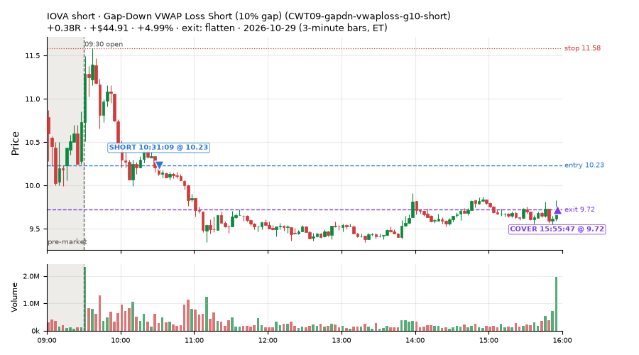
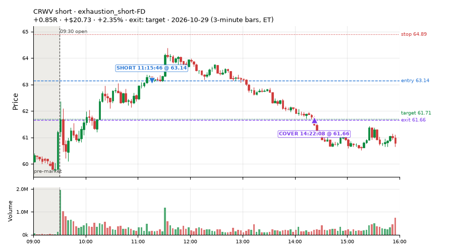
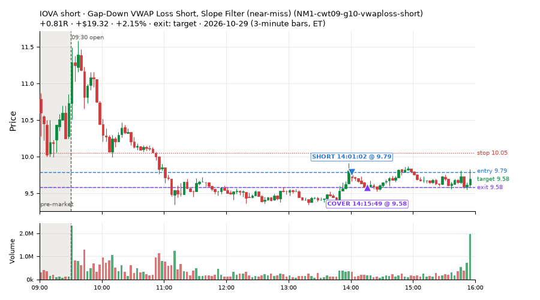
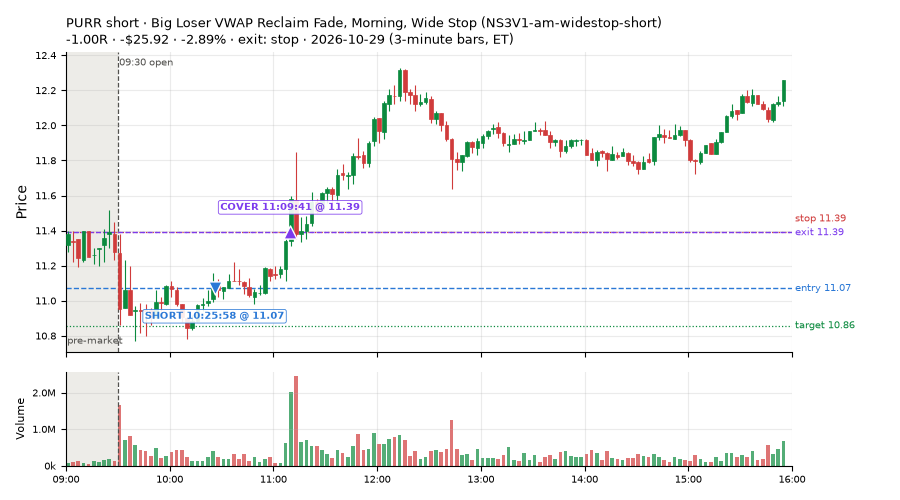
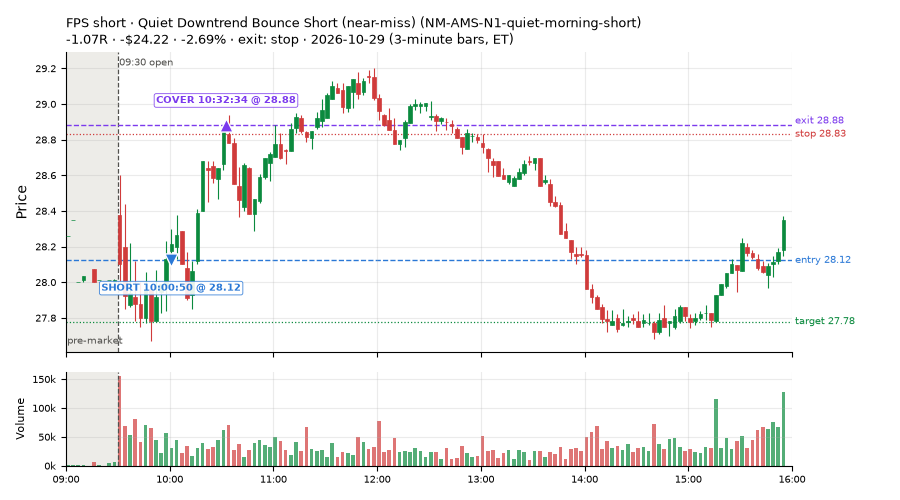
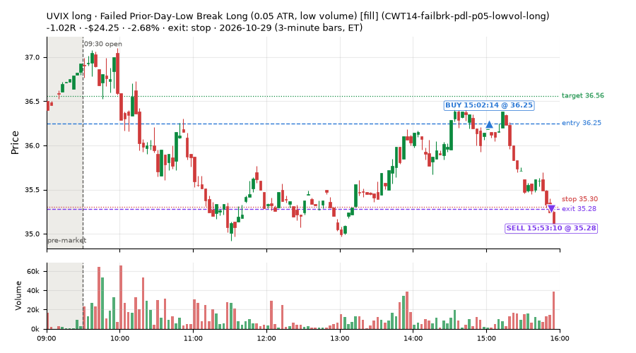
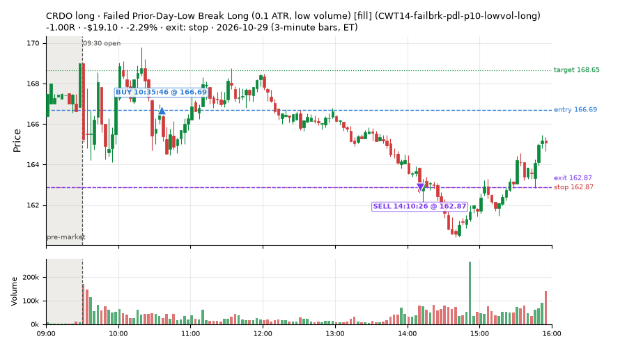

204 trades · win rate 67% · P/L $269.90
PROBATION: no live setup has passed both locked test periods. 10 owner-directed setups added 2026-10-08 (MarcoFlow top 5 + 5 new), untested live. RW6G1 (RW6 + VWAP band guard) added 2026-10-09, probation.

| Symbol | Setup | Side | In | Out | Entry | Exit | Exit reason | % gained | P/L |
|---|---|---|---|---|---|---|---|---|---|
| IOVA | Gap-Down VWAP Loss Short (10% gap) (CWT09-gapdn-vwaploss-g10-short) | short | 10:31 | 15:55 | 10.23 | 9.72 | flatten | +4.99% | $44.91 |
| CRWV | exhaustion_short-FD | short | 11:15 | 14:22 | 63.14 | 61.66 | target | +2.35% | $20.73 |
| IOVA | Gap-Down VWAP Loss Short, Slope Filter (near-miss) (NM1-cwt09-g10-vwaploss-short) | short | 14:01 | 14:15 | 9.79 | 9.58 | target | +2.15% | $19.32 |
| Symbol | Setup | Side | In | Out | Entry | Exit | Exit reason | % lost | P/L |
|---|---|---|---|---|---|---|---|---|---|
| PURR | NS3V1-am-widestop-short | short | 10:25 | 11:09 | 11.07 | 11.39 | stop | -2.89% | $-25.92 |
| FPS | NM-AMS-N1-quiet-morning-short | short | 10:00 | 10:32 | 28.12 | 28.88 | stop | -2.69% | $-24.22 |
| UVIX | CWT14-failbrk-pdl-p05-lowvol-long | long | 15:02 | 15:53 | 36.25 | 35.28 | stop | -2.68% | $-24.25 |
| CRDO | CWT14-failbrk-pdl-p10-lowvol-long | long | 10:35 | 14:10 | 166.69 | 162.87 | stop | -2.29% | $-19.10 |
| CRDO | CWT14-failbrk-pdl-p05-lowvol-long | long | 10:35 | 14:10 | 166.55 | 162.87 | stop | -2.21% | $-18.40 |







Signal to fill: median 1s, 90th percentile 3s (204 trades). Bars close each minute; the order follows the bar close.
Best excursion (MFE): median 0.52R; worst (MAE) median 0.66R. 19% of trades never got +0.25R in our favour; 1 reached +1R and still closed at or below 0.
| Symbol | Setup | Best R | Worst R | Closed R |
|---|---|---|---|---|
| AIRR | NS4-pm-vwap-reclaim-oversold-short | +1.00 | -1.22 | -1.10 |
| BNO | RW1-gapdn-bounce-flowsell-short-FD | +0.85 | -1.07 | -1.08 |
| ITB | NS4-pm-vwap-reclaim-oversold-short | +0.94 | -1.24 | -0.98 |
| QXO | NS4-pm-vwap-reclaim-oversold-short | +1.62 | -0.56 | -0.14 |
| SNOW | NM-AR-AM-gapdown-capitulation-long | +0.63 | -1.01 | -1.05 |
| Entry time | Trades | Win | Avg R | P/L |
|---|---|---|---|---|
| 09:50-10:30 | 79 | 68% | +0.03 | $1.01 |
| 10:30-11:30 | 59 | 61% | -0.05 | $68.66 |
| 11:30-13:00 | 28 | 64% | -0.00 | $94.79 |
| 13:00-14:00 | 15 | 87% | +0.51 | $56.49 |
| 14:00-16:00 | 23 | 65% | +0.10 | $48.95 |
| Setup | Trades | Win | Avg R | Adj R (net of SPY) | P/L |
|---|---|---|---|---|---|
| Backside Lower-High Short (CWT04-backside-lh-a15-short) | 1.0 | 0% | -0.69 | -0.50 | $-7.20 |
| Backside VWAP-Test Short (CWT04-backside-vwaptest-a15-short) | 1.0 | 0% | -1.21 | -1.08 | $-5.22 |
| Panic Flush Reversal (5x volume) (CWT05-flush-m05-v5-long) | 2.0 | 100% | +0.58 | +0.85 | $5.23 |
| Panic Flush Reversal (deep, 3x volume) (CWT05-flush-m075-v3-long) | 1.0 | 100% | +0.78 | +0.84 | $3.03 |
| Panic Flush Reversal (deep, 5x volume) (CWT05-flush-m075-v5-long) | 1.0 | 100% | +0.75 | +0.81 | $2.93 |
| Gap-Down Bounce Rejection Short (10% gap) (CWT09-gapdn-bounce-g10-lowerhalf-short) | 2.0 | 100% | +0.40 | +0.36 | $10.25 |
| Gap-Down VWAP Loss Short (10% gap) (CWT09-gapdn-vwaploss-g10-short) | 2.0 | 100% | +0.29 | +0.28 | $49.70 |
| Spike-Pullback Flag Breakout (CWT12-flag-s1-long) | 1.0 | 0% | -1.16 | -0.46 | $-1.89 |
| Stretched Below VWAP Bounce (CWT13-vwapstretch-z05-long) | 4.0 | 75% | +0.21 | +0.19 | $6.33 |
| Stretched Below VWAP Bounce (far) (CWT13-vwapstretch-z075-long) | 1.0 | 100% | +0.52 | +0.48 | $14.08 |
| Stretched Above VWAP Fade (far) (CWT13-vwapstretch-z075-short) | 1.0 | 0% | -1.02 | -1.18 | $-4.92 |
| Failed Prior-Day-Low Break Long (0.05 ATR, low volume) [fill] (CWT14-failbrk-pdl-p05-lowvol-long) | 49.0 | 63% | -0.09 | -0.14 | $-57.70 |
| Failed Prior-Day-Low Break Long (CWT14-failbrk-pdl-p10-long) | 35.0 | 69% | +0.05 | -0.07 | $-5.61 |
| Failed Prior-Day-Low Break Long (0.1 ATR, low volume) [fill] (CWT14-failbrk-pdl-p10-lowvol-long) | 31.0 | 68% | -0.01 | -0.10 | $-15.64 |
| L3-gap-slope-rsi5hi-FD | 15.0 | 93% | +0.40 | +0.33 | $118.75 |
| * Shallow Nasdaq Dip, Breadth Turn (TQQQ) (near-miss) (LD2-qqq-dip015-breadthturn-tqqq-t05s1-long) | 1.0 | 0% | -0.98 | -0.90 | $-8.28 |
| Early Sellers, Mid-High RSI (MF2-open-rsimidhi-flowsell) owner-directed; holdouts once: Sep-Oct -0.108R n41, Apr-Jun +0.046R n171 | 1.0 | 0% | -1.09 | -0.80 | $-7.06 |
| MF5-flowsell-vwapup-rsi5hi-FD | 6.0 | 50% | -0.20 | -0.12 | $-6.01 |
| Quiet Downtrend Bounce Short (near-miss) (NM-AMS-N1-quiet-morning-short) | 1.0 | 0% | -1.07 | -1.04 | $-24.22 |
| Gap-Down Capitulation Buy (near-miss) (NM-AR-AM-gapdown-capitulation-long) | 8.0 | 88% | +0.41 | +0.39 | $40.55 |
| Afternoon Higher-Low Long (near-miss) (NM-HL-T75-pm-long) | 3.0 | 67% | +0.28 | +0.18 | $21.03 |
| Early Sellers into a Pop (index down, no gap up) (near-miss) (NM-MF3-qqqdn-gapdn-FD) | 3.0 | 0% | -0.92 | -0.96 | $-19.29 |
| Gap-Down Reclaim Fade, Afternoon (near-miss) (NM-PM-gapdn-above-pdh-rvol-short) | 1.0 | 100% | +0.94 | +0.85 | $4.28 |
| Early NS3 Short While SPY Up (near-miss) (NM-RWN3-ns3-spyup-early-short) | 1.0 | 0% | -0.98 | -0.92 | $-11.34 |
| Gap-Down VWAP Loss Short, Slope Filter (near-miss) (NM1-cwt09-g10-vwaploss-short) | 2.0 | 100% | +0.77 | +0.71 | $33.28 |
| Big Loser VWAP Reclaim Fade, Morning, Wide Stop (NS3V1-am-widestop-short) | 3.0 | 67% | +0.01 | -0.01 | $-2.62 |
| Afternoon VWAP Reclaim Fade (NS4-pm-vwap-reclaim-oversold-short) owner-directed; holdouts once: Sep-Oct -0.086R n49, Apr-Jun -0.080R n342 | 7.0 | 43% | +0.18 | +0.16 | $27.03 |
| RW1-gapdn-bounce-flowsell-short-FD | 5.0 | 20% | -0.56 | -0.49 | $-10.46 |
| exhaustion_short-FD | 15.0 | 87% | +0.54 | +0.43 | $120.89 |
Market direction (SPY, beta 1) accounted for $62.12 of today's $269.90; the rest ($207.78) came from the setups themselves. Avg R net of SPY: -0.01 (incl. a hedge leg's cost; report only).
48 setups live today. Today: 399 signals, 204 taken, 11 lost because another setup held the symbol (3%). Since 2026-10-12 (14 sessions): 7753 signals, 3901 taken, 666 lost to other setups (9%). Peak open positions today 84 of 400 slots. Earnings blackout removed 1490 symbols before scanning.
Simulated playing time (not live): 3837 what-if trades of signals not taken, avg -0.10R, 58% winners; of them 666 lost to another setup (avg -0.20R).
Silent: LD4-st4-breadthup-t1s05-long, LD8-spy-dip030-breadthturn-spxl-holdtr-long, LD1-ns1-breadthup-t05s1-long, NM-RWR1-exh150-gapdn-spyup-pm-short, CWT04-backside-lh-a25-short, CWT04-backside-vwaptest-a25-short · Crowded out: NS3-failed-vwap-reclaim-short-FD, MF5-flowsell-vwapup-rsi5hi · Starved: NS5-sma50-flush-oversold-long-FD, RW4-ns3-adv150-short-FD, exhaustion_short-FD
| Prio | Setup | Today sig / taken | Sessions | Signals / taken / trades | Taken/day | Expected/day | Lost to other setups | Lost to (setup n) | Top skip reasons | SIMULATED: not-taken n / avg R / win | Verdict |
|---|---|---|---|---|---|---|---|---|---|---|---|
| 1 | Big Loser VWAP Reclaim Fade, Morning, Wide Stop NS3V1-am-widestop-short | 6 / 3 | 5 | 24 / 16 / 16 | 3.20 | 5.30 | 2 | NS3V1-am-widestop-short 2 | not shortable / shorts off 4, symbol held by another setup 2, spread / quote / size 2 | 8 / -0.47R / 38% | ok 16.0 entries/week |
| 2 | Big Loser VWAP Reclaim Fade (all day) NS3-failed-vwap-reclaim-short-FD | 14 / 0 | 6 | 82 / 25 / 25 | 4.17 | 22.02 | 26 | NS3V1-am-widestop-short 20, NS3-failed-vwap-reclaim-short-FD 4, RW4-ns3-adv150-short-FD 4 | symbol held by another setup 26, not shortable / shorts off 18, spread / quote / size 13 | 57 / -0.41R / 30% | crowded-out 26 of 82 signals (32%) lost to setups already holding the symbol |
| 3 | * Oversold EMA Cross-Down with Breadth Turning Up (near-miss) LD4-st4-breadthup-t1s05-long | 0 / 0 | 7 | 0 / 0 / 0 | 0.00 | – | 0 | – | – | 0 / – | silent no signals in 7 session(s); no expected rate on file |
| 4 | * Oversold Slope Turn with Breadth Turning Up (near-miss) LD5-st2-breadthup-t05s1-long | 0 / 0 | 7 | 1 / 0 / 0 | 0.00 | – | 1 | NS3V1-am-widestop-short 1 | symbol held by another setup 1 | 1 / +0.51R / 100% | slow no entries yet |
| 5 | * SPY Dip of 0.30%, Breadth Turn (SPXL, trailing) (near-miss) LD8-spy-dip030-breadthturn-spxl-holdtr-long | 0 / 0 | 7 | 0 / 0 / 0 | 0.00 | – | 0 | – | – | 0 / – | silent no signals in 7 session(s); no expected rate on file |
| 6 | * Oversold Slope Turn after an SPY Dip-Turn (near-miss) LD3-st2-idxturn-t05s1-long | 0 / 0 | 7 | 1 / 0 / 0 | 0.00 | – | 1 | NS3V1-am-widestop-short 1 | symbol held by another setup 1 | 1 / +0.51R / 100% | slow no entries yet |
| 7 | * SPY Dip of 0.2 ATR, Breadth Turn (SPXL, trailing) (near-miss) LD6-spy-dip020atr-breadthturn-spxl-holdtr-long | 0 / 0 | 7 | 2 / 2 / 2 | 0.29 | – | 0 | – | – | 0 / – | slow 1.4 entries/week; ~42 weeks to 60 trades |
| 8 | * Oversold Pop with Breadth Turning Up (near-miss) LD1-ns1-breadthup-t05s1-long | 0 / 0 | 7 | 0 / 0 / 0 | 0.00 | – | 0 | – | – | 0 / – | silent no signals in 7 session(s); no expected rate on file |
| 9 | * Shallow Nasdaq Dip, Breadth Turn (TQQQ) (near-miss) LD2-qqq-dip015-breadthturn-tqqq-t05s1-long | 1 / 1 | 7 | 3 / 3 / 3 | 0.43 | – | 0 | – | – | 0 / – | slow 2.1 entries/week; ~28 weeks to 60 trades |
| 10 | * Oversold Pop after an SPY Dip-Turn (trailing) (near-miss) LD7-ns1-idxturn-holdtr-long | 0 / 0 | 7 | 1 / 1 / 1 | 0.14 | – | 0 | – | – | 0 / – | slow 0.7 entries/week; ~84 weeks to 60 trades |
| 11 | Monday Weak-RS NS3 Short (near-miss) NM-RWN5-ns3-mon-weakrs-short | 0 / 0 | 9 | 6 / 5 / 5 | 0.56 | – | 0 | – | spread / quote / size 1 | 1 / -1.02R / 0% | slow 2.8 entries/week; ~22 weeks to 60 trades |
| 12 | Early NS3 Short While QQQ Up (near-miss) NM-RWR3-ns3-qqqup-early-short | 0 / 0 | 9 | 3 / 2 / 2 | 0.22 | – | 0 | – | spread / quote / size 1 | 1 / -1.02R / 0% | slow 1.1 entries/week; ~54 weeks to 60 trades |
| 13 | Early NS3 Short While SPY Up (near-miss) NM-RWN3-ns3-spyup-early-short | 2 / 1 | 9 | 5 / 3 / 3 | 0.33 | – | 0 | – | not shortable / shorts off 1, spread / quote / size 1 | 2 / -0.08R / 50% | slow 1.7 entries/week; ~36 weeks to 60 trades |
| 14 | Late-Day ETF Dip Buy (near-miss) NM-ETF-late-dip-di-long | 0 / 0 | 9 | 8 / 7 / 7 | 0.78 | – | 0 | – | spread / quote / size 1 | 1 / +0.75R / 100% | slow 3.9 entries/week; ~15 weeks to 60 trades |
| 15 | NS2 Up-3 Short, QQQ Up, Slope Down (near-miss) NM-RWR4-ns2-up3-qqqup-slopedn-short | 0 / 0 | 9 | 6 / 5 / 5 | 0.56 | – | 0 | – | not shortable / shorts off 1 | 1 / -1.04R / 0% | slow 2.8 entries/week; ~22 weeks to 60 trades |
| 16 | Afternoon Exhaustion Short, Gap-Down, SPY Up (near-miss) NM-RWR1-exh150-gapdn-spyup-pm-short | 0 / 0 | 9 | 0 / 0 / 0 | 0.00 | – | 0 | – | – | 0 / – | silent no signals in 9 session(s); no expected rate on file |
| 17 | NS2 Short, SPY Up 0.5%, Not Friday (near-miss) NM-RWN4-ns2-spyup05-notfri-short | 0 / 0 | 9 | 9 / 8 / 8 | 0.89 | – | 0 | – | not shortable / shorts off 1 | 1 / -1.04R / 0% | slow 4.4 entries/week; ~14 weeks to 60 trades |
| 18 | Gap-Down Capitulation Buy (near-miss) NM-AR-AM-gapdown-capitulation-long | 16 / 8 | 9 | 45 / 33 / 33 | 3.67 | – | 0 | – | spread / quote / size 12 | 12 / +0.13R / 58% | ok 18.3 entries/week |
| 19 | Quiet Downtrend Bounce Short (near-miss) NM-AMS-N1-quiet-morning-short | 1 / 1 | 9 | 2 / 1 / 1 | 0.11 | – | 1 | NM-AR-AM-gapdown-capitulation-long 1 | symbol held by another setup 1 | 1 / +0.51R / 100% | slow 0.6 entries/week; ~108 weeks to 60 trades |
| 20 | Gap-Down Reclaim Fade, Afternoon (near-miss) NM-PM-gapdn-above-pdh-rvol-short | 1 / 1 | 9 | 2 / 2 / 2 | 0.22 | – | 0 | – | – | 0 / – | slow 1.1 entries/week; ~54 weeks to 60 trades |
| 21 | Gap-Down VWAP Loss Short, Slope Filter (near-miss) NM1-cwt09-g10-vwaploss-short | 6 / 2 | 9 | 22 / 4 / 4 | 0.44 | – | 0 | – | not shortable / shorts off 15, spread / quote / size 3 | 18 / +0.02R / 50% | slow 2.2 entries/week; ~27 weeks to 60 trades |
| 22 | Afternoon Higher-Low Long (near-miss) NM-HL-T75-pm-long | 3 / 3 | 9 | 13 / 12 / 12 | 1.33 | – | 0 | – | spread / quote / size 1 | 1 / +0.49R / 100% | slow 6.7 entries/week; ~9 weeks to 60 trades |
| 23 | Backside Lower-High Short (big runner) CWT04-backside-lh-a25-short | 0 / 0 | 14 | 0 / 0 / 0 | 0.00 | – | 0 | – | – | 0 / – | silent no signals in 14 session(s); no expected rate on file |
| 24 | Backside VWAP-Test Short (big runner) CWT04-backside-vwaptest-a25-short | 0 / 0 | 14 | 0 / 0 / 0 | 0.00 | – | 0 | – | – | 0 / – | silent no signals in 14 session(s); no expected rate on file |
| 25 | Gap-Down VWAP Loss Short (10% gap) CWT09-gapdn-vwaploss-g10-short | 16 / 2 | 14 | 60 / 6 / 6 | 0.43 | – | 0 | – | not shortable / shorts off 49, spread / quote / size 3, daily loss cap 1 | 54 / -0.12R / 48% | slow 2.1 entries/week; ~28 weeks to 60 trades |
| 26 | Panic Flush Reversal (deep, 5x volume) CWT05-flush-m075-v5-long | 1 / 1 | 14 | 7 / 4 / 4 | 0.29 | – | 0 | – | daily loss cap 2, spread / quote / size 1 | 3 / +0.42R / 100% | slow 1.4 entries/week; ~42 weeks to 60 trades |
| 27 | NS5-sma50-flush-oversold-long-FD NS5-sma50-flush-oversold-long-FD | 0 / 0 | 7 | 6 / 5 / 5 | 0.71 | 6.32 | 0 | – | spread / quote / size 1 | 1 / -0.01R / 0% | starved 0.71 entries/day vs ~6.32 expected |
| 28 | Gap-Down Bounce Rejection Short (10% gap) CWT09-gapdn-bounce-g10-lowerhalf-short | 17 / 2 | 14 | 87 / 13 / 13 | 0.93 | – | 0 | – | not shortable / shorts off 68, spread / quote / size 4, price through stop/target 1 | 74 / -0.66R / 19% | slow 4.6 entries/week; ~13 weeks to 60 trades |
| 29 | Backside Lower-High Short CWT04-backside-lh-a15-short | 1 / 1 | 14 | 5 / 2 / 2 | 0.14 | – | 0 | – | spread / quote / size 2, daily loss cap 1 | 3 / +0.28R / 67% | slow 0.7 entries/week; ~84 weeks to 60 trades |
| 30 | Panic Flush Reversal (5x volume) CWT05-flush-m05-v5-long | 2 / 2 | 14 | 11 / 6 / 6 | 0.43 | – | 1 | CWT14-failbrk-orl-p10-long 1 | daily loss cap 2, spread / quote / size 2, symbol held by another setup 1 | 5 / +0.51R / 100% | slow 2.1 entries/week; ~28 weeks to 60 trades |
| 31 | Panic Flush Reversal (deep, 3x volume) CWT05-flush-m075-v3-long | 2 / 1 | 14 | 17 / 11 / 11 | 0.79 | – | 0 | – | daily loss cap 3, spread / quote / size 2, broker rejected 1 | 6 / +0.17R / 83% | slow 3.9 entries/week; ~15 weeks to 60 trades |
| 32 | Spike-Pullback Flag Breakout CWT12-flag-s1-long | 1 / 1 | 14 | 18 / 14 / 14 | 1.00 | – | 0 | – | daily loss cap 2, spread / quote / size 1, broker rejected 1 | 4 / -0.16R / 75% | slow 5.0 entries/week; ~12 weeks to 60 trades |
| 33 | Backside VWAP-Test Short CWT04-backside-vwaptest-a15-short | 2 / 1 | 14 | 13 / 7 / 7 | 0.50 | – | 1 | CWT14-failbrk-pdl-p05-lowvol-long 1 | spread / quote / size 3, symbol held by another setup 1, daily loss cap 1 | 6 / +0.47R / 50% | slow 2.5 entries/week; ~24 weeks to 60 trades |
| 34 | Early Sellers into a Pop (index down, no gap up) (near-miss) NM-MF3-qqqdn-gapdn-FD | 5 / 3 | 7 | 36 / 22 / 22 | 3.14 | 4.90 | 4 | NM-AR-AM-gapdown-capitulation-long 4 | spread / quote / size 6, symbol held by another setup 4, not shortable / shorts off 4 | 14 / +0.24R / 64% | ok 15.7 entries/week |
| 35 | Stretched Above VWAP Fade (far) CWT13-vwapstretch-z075-short | 2 / 1 | 14 | 29 / 15 / 15 | 1.07 | – | 0 | – | not shortable / shorts off 8, daily loss cap 4, spread / quote / size 1 | 14 / -0.62R / 21% | slow 5.4 entries/week; ~11 weeks to 60 trades |
| 36 | RW1-gapdn-bounce-flowsell-short-FD RW1-gapdn-bounce-flowsell-short-FD | 6 / 5 | 7 | 62 / 38 / 38 | 5.43 | 17.10 | 4 | NM-AR-AM-gapdown-capitulation-long 1, NM-HL-T75-pm-long 1, CWT12-coil-k4-long 1 | daily loss cap 10, spread / quote / size 7, symbol held by another setup 4 | 24 / +0.70R / 88% | ok 27.1 entries/week |
| 37 | MF5-flowsell-vwapup-rsi5hi-FD MF5-flowsell-vwapup-rsi5hi-FD | 10 / 6 | 7 | 47 / 33 / 33 | 4.71 | 15.47 | 1 | NM-AR-AM-gapdown-capitulation-long 1 | spread / quote / size 9, not shortable / shorts off 4, symbol held by another setup 1 | 14 / +0.20R / 57% | ok 23.6 entries/week |
| 38 | RW4-ns3-adv150-short-FD RW4-ns3-adv150-short-FD | 1 / 0 | 7 | 30 / 19 / 19 | 2.71 | 17.34 | 7 | NS3-failed-vwap-reclaim-short-FD 6, RW4-ns3-adv150-short-FD 6, NM-AR-AM-gapdown-capitulation-long 1 | symbol held by another setup 7, spread / quote / size 3, not shortable / shorts off 1 | 11 / -0.43R / 18% | starved 2.71 entries/day vs ~17.34 expected |
| 39 | Sellers into Strength (all day) MF5-flowsell-vwapup-rsi5hi | 4 / 0 | 7 | 21 / 0 / 0 | 0.00 | 15.47 | 16 | MF5-flowsell-vwapup-rsi5hi-FD 15, NM-AR-AM-gapdown-capitulation-long 1 | symbol held by another setup 16, spread / quote / size 3, not shortable / shorts off 2 | 21 / -0.12R / 48% | crowded-out 16 of 21 signals (76%) lost to setups already holding the symbol |
| 40 | exhaustion_short-FD exhaustion_short-FD | 18 / 15 | 7 | 83 / 59 / 59 | 8.43 | 64.64 | 3 | CWT12-coil-k4-long 3 | not shortable / shorts off 13, spread / quote / size 8, symbol held by another setup 3 | 24 / -0.08R / 50% | starved 8.43 entries/day vs ~64.64 expected |
| 41 | Stretched Below VWAP Bounce (far) CWT13-vwapstretch-z075-long | 1 / 1 | 14 | 41 / 10 / 10 | 0.71 | – | 0 | – | daily loss cap 28, spread / quote / size 3 | 31 / -0.40R / 39% | slow 3.6 entries/week; ~17 weeks to 60 trades |
| 42 | Stretched Below VWAP Bounce CWT13-vwapstretch-z05-long | 6 / 4 | 13 | 228 / 62 / 62 | 4.77 | – | 1 | CWT14-failbrk-pdh-p05-lowvol-short 1 | daily loss cap 152, spread / quote / size 12, symbol held by another setup 1 | 165 / -0.14R / 60% | ok 23.8 entries/week |
| 43 | Early Sellers, Mid-High RSI MF2-open-rsimidhi-flowsell | 2 / 1 | 2 | 2 / 1 / 1 | 0.50 | 1.30 | 0 | – | not shortable / shorts off 1 | 1 / -1.06R / 0% | slow 2.5 entries/week; ~24 weeks to 60 trades |
| 44 | Afternoon VWAP Reclaim Fade NS4-pm-vwap-reclaim-oversold-short | 8 / 7 | 2 | 10 / 8 / 8 | 4.00 | 3.05 | 0 | – | spread / quote / size 2 | 2 / +0.44R / 50% | ok 20.0 entries/week |
| 45 | Failed Prior-Day-Low Break Long (0.1 ATR, low volume) [fill] CWT14-failbrk-pdl-p10-lowvol-long | 34 / 31 | 9 | 198 / 132 / 132 | 14.67 | – | 7 | CWT14-failbrk-pdl-p10-long 3, CWT14-failbrk-pdl-p05-lowvol-long 2, CWT09-gapdn-bounce-g5-lowerhalf-short 1 | spread / quote / size 45, daily loss cap 12, symbol held by another setup 7 | 63 / -0.08R / 65% | ok 73.3 entries/week |
| 46 | L3-gap-slope-rsi5hi-FD L3-gap-slope-rsi5hi-FD | 109 / 15 | 7 | 207 / 45 / 45 | 6.43 | – | 0 | – | not shortable / shorts off 151, spread / quote / size 11 | 161 / +0.10R / 77% | ok 32.1 entries/week |
| 47 | Failed Prior-Day-Low Break Long CWT14-failbrk-pdl-p10-long | 45 / 35 | 14 | 591 / 384 / 384 | 27.43 | – | 22 | CWT14-failbrk-pdl-p10-lowvol-long 15, CWT14-failbrk-pdl-p05-lowvol-long 4, CWT14-failbrk-pdl-p05-long 2 | spread / quote / size 133, daily loss cap 31, symbol held by another setup 22 | 204 / -0.04R / 66% | ok 137.1 entries/week |
| 48 | Failed Prior-Day-Low Break Long (0.05 ATR, low volume) [fill] CWT14-failbrk-pdl-p05-lowvol-long | 56 / 49 | 14 | 654 / 433 / 433 | 30.93 | – | 28 | CWT14-failbrk-pdl-p10-lowvol-long 17, CWT14-failbrk-pdl-p10-long 13, CWT14-failbrk-pdl-p05-long 7 | spread / quote / size 129, daily loss cap 57, symbol held by another setup 28 | 218 / -0.07R / 65% | ok 154.6 entries/week |
Every trade is attached as a CSV you can open and edit in Excel or Google Sheets. Live page: https://misiti15.github.io/MCF/live/